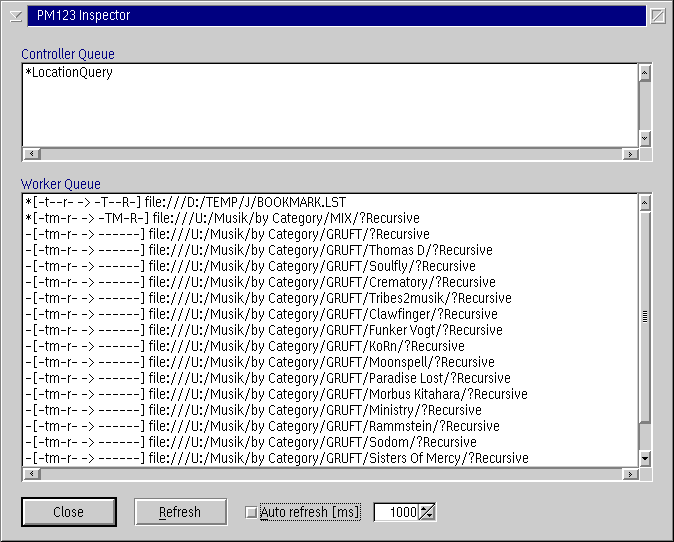

PM123's Inspector Window
The Inspector Window tells you what is currently going on in
the PM123 engine. Normally you should not need it. It is activated by
pressing Alt+Shift+I in PM123's main window.

Controller Queue
The Controller Queue shows what commands are currently about
to be executed. The Syntax is: FCommand
[arguments].
- F
- flag
- * - currently
in work by a worker thread
- - to do later
+ - adjacent
to the previous command, executed only if the previous command succeeded
- Command [arguments]
- control commands like PlayStop, Navigate
(e.g.
Seek), Load or LocationQuery
(GUI updates of the current playing time)
The controller queue is always executed strictly in order.
Worker Queue
The Worker Queue is used to obtain certain informations about
any kind of playable objects. The Syntax is: F[QQQQQQ
-> WWWWWW] URL.
- F -
flag
- * - currently in work by a
worker thread
- - to do later
- QQQQQQ -
request flags
- Kind of information that is requested: ftmpro
f - format (sampling rate, channels)
t - technical information like bit
rate and playing time
m - meta information like artist
and title
p - physical
information like file size
r - recursive playlist information
o - others like playlist content
Uppercase letters are high priority
requests where a user is likely to be waiting for. E.g. when
an item is loaded into the player.
- WWWWWW -
in work flags
- The second block identifies the kind of information that is
currently in work. It uses the same format FTMPRO
as the request flags. Sometimes the information in work is more than
requested. E.g. it might be cheap to return format information if only
the total playing time is requested.
- URL
- This is the object for which the information is requested.
Refresh
The Inspector dialog is not automatically
refreshed when the information in the queues changes. Instead the refresh
is done either manual or timer based. Be careful not to set the auto
refresh rate too high to avoid a performance impact.